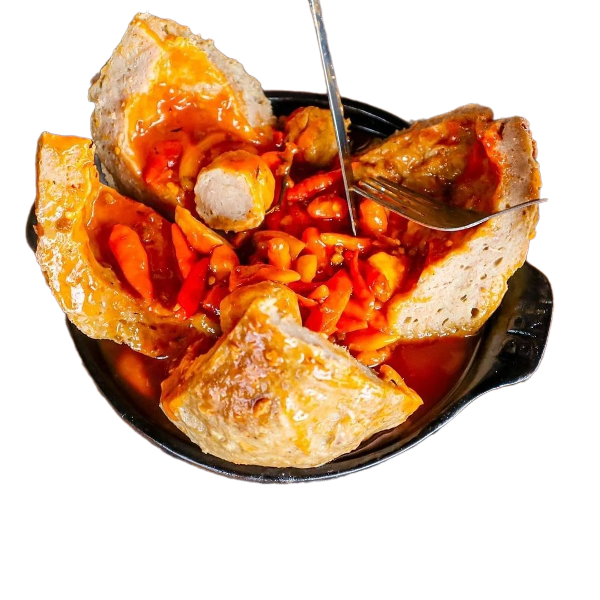

Bakso yang sangatenak adalah
baso mercon berlimpah cabe

Yakin kamu beneran pecinta bakso? Kamu belum bisa dikatakan pecinta bakso beneran sih kalau belum nyobain bakso daging baik kita. Cobain sekarang deh dan rasakan kenikmatan bakso di setiap gigitan Cuaca dingin gini emang paling cocok makan yang panas dan berkuah. Bakso ini cocok banget sih buat ngangetin badan. Apalagi harganya juga murah banget, jadi nggak perlu khawatir kantong bolong deh. Yuk beli sekarang juga.
Salah satu alasan topoki menjadi sangat enak karena bahan-bahannya yang diolah dengan bumbu-bumbu khas Korea. Saus pedasnya terbuat dari campuran gochujang atau pasta cabai khas Korea, kecap asin, gula, dan bahan-bahan lainnya. Saat dimakan, saus ini memberikan sensasi yang sangat kaya dan juga nikmat di lidah. Selain itu, topoki atau adonan beras yang digunakan dalam makanan ini juga memberikan rasa kenyal yang sangat enak saat digigit. Topoki yang empuk dengan saus pedas dan manis menciptakan kombinasi yang sangat enak dan juga memuaskan.